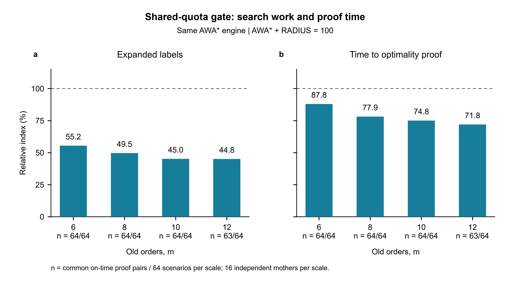
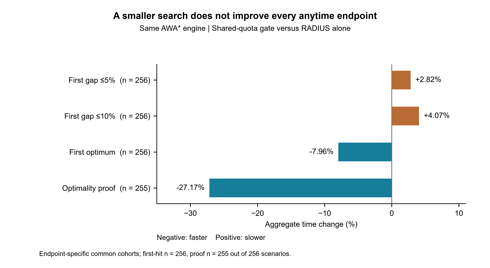
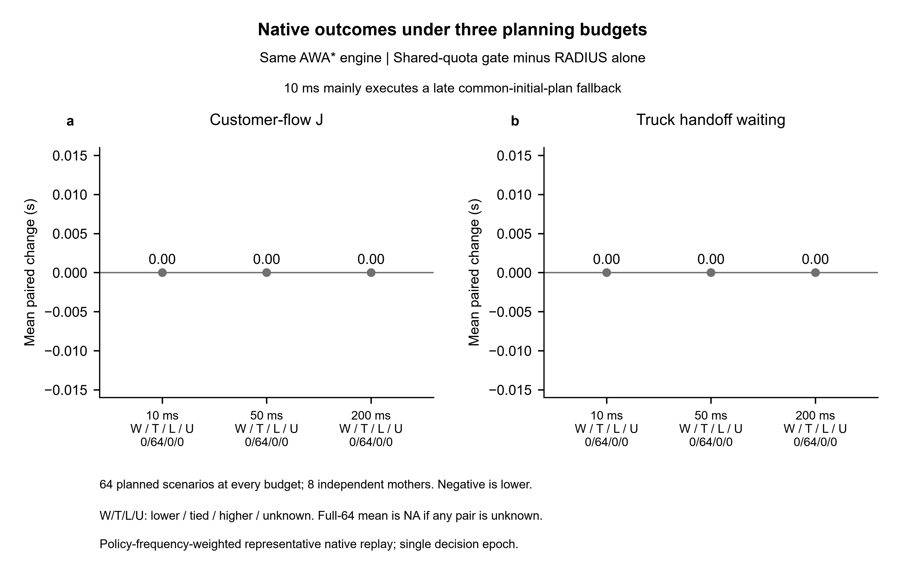

7 November 2026
The main deployment remains the frozen RADIUS_PAIR_AWA_GATED combination. The added check preserves the capacity relationship between two indivisible incoming orders. A common first-handoff time links their release requirements, and each old parcel can release capacity only once. A constructive upper bound on the relaxation skips added calculations that cannot reject the state.
The AWA and ANA comparison implementations follow complete published search policies with declared freight-domain adapters. Their common initialization, raw-bound cache, state transitions, objectives and deadlines are held fixed. They do not reproduce the complete Hof-Schneider or Wei freight routing systems.
There are 256 new scenarios from 64 mother instances, with 6, 8, 10 or 12 old orders and four paired capacity/signal conditions. Four methods and three technical repetitions give 3,072 completed calls. All methods found the verified optimum within one second in every scenario and repetition. Finding that solution and finishing its optimality proof are recorded separately.
The table compares the generic AWA implementation with the added check against each baseline. Both methods had to finish proof within the budget in all three repetitions for a case to enter the common-proof table. Percentages use sums of case medians on that identical subset. Negative values mean less work or time.
| Baseline | Common proof cases | Expanded states | Proof time | Faster / slower cases |
|---|---|---|---|---|
| Complete AWA + RADIUS | 255 | -54.74% | -27.17% | 233 / 22 |
| Complete ANA + RADIUS | 255 | -51.64% | -23.42% | 214 / 41 |
The same-kernel comparison isolates the added check. The selected specialized deployment has different bookkeeping costs. Its implementation advantage is reported separately.
| Same-kernel target | Cases | Time change |
|---|---|---|
| First exact optimum | 256 | -7.96% |
| First 5% duration gap | 256 | +2.82% |
| First 10% duration gap | 256 | +4.07% |
The duration gap uses remaining time from the decision epoch. The slower early-quality results remain part of the evidence.
The online extension connects the capacity-release check to the total customer-flow objective. Eight new demand mothers each have eight fixed signal-offset, pedestrian and slow-vehicle conditions, giving 64 scenarios. Each scenario has 16 old orders on two receivers and two new orders. The main comparison changes only the PAIR check within one complete AWA engine. All inputs, objectives, initial plans, search order and budgets are shared.
All 1,728 policy calls and 128 distinct native SUMO replays completed. The independent audit passed all 576 case/method/budget aggregates. Both main methods selected the same executed plan and activation tick in every paired call at 10, 50 and 200 ms. Every customer's completion time and the truck's handoff waiting time were unchanged. All eight mother-level differences and all eight traffic-condition differences are zero.
At 50 and 200 ms the added check removed 170 case-median expansions, reducing the all-case total from 6,304 to 6,134. The common on-time proof cost increased by 5.57% at 50 ms and 2.87% at 200 ms. At 50 ms the candidate completed proof in all three repetitions for 64 cases, versus 63 for the control. That single coverage difference is retained alongside the slower common-case proof time.
The 10-ms runs largely executed a late common initializer: 192 of 192 candidate calls and 191 of 192 control calls had no plan by the deadline. Neither arm expanded a state. These physical fallback outcomes are not evidence of valid within-budget solution quality. At 50 and 200 ms all initial plans arrived on time, and every case improved on the common initializer.
Measured planning delay was charged to execution. All 1,728 calls nevertheless activated at 6.2 seconds because the simulator rounds activation upward to its 0.2-second step. In the main comparison, identical plans and identical activation ticks explain the identical physical outcomes. The online check has demonstrated additional rejection, but no incremental delivery or truck-wait benefit in this cohort.
| Budget | Actual customer-flow change | Truck-wait change | Expanded states | Common proof cases | Proof-time change |
|---|---|---|---|---|---|
| 10 ms | 0; late fallback dominates | 0 s | 0 to 0 | 0 / 64 | Not available |
| 50 ms | 0 | 0 s | 6,304 to 6,134 | 63 / 64 | +5.57% |
| 200 ms | 0 | 0 s | 6,304 to 6,134 | 64 / 64 | +2.87% |
Full online findings, deadlines and tradeoffs
Independent audit of raw execution
All case-level method/budget results
Every prespecified traffic condition
A separate 128-call instrumented profile measured 5,309 PAIR queries. The cheap upper test skipped 4,337 of them, or 81.69%. PAIR took 80.9517 ms in total, 15.25 microseconds per invocation and 4.40% of instrumented elapsed time. It rejected 170 states across 44 of 64 cases. These instrumented runs are not pooled with the formal timing runs because added timers changed the work completed before the deadline.
At 50 ms the candidate's total realized customer flow was 11.50% lower than old ROUTE's. The ordinary RADIUS, same-engine AWA control and ANA methods obtained the same realized outcome as the candidate. The improvement over old ROUTE therefore does not establish a benefit from the added joint check.
The lower customer-flow objective also has a service tradeoff. Mean truck handoff waiting was 264.0875 seconds for the candidate, compared with 253.9229 seconds for old ROUTE. Both new customers received their orders later on average. The improvement in total customer flow came from earlier completion of old orders. The stated objective sums all customer flow times and does not directly minimize the truck's waiting time.
| 50-ms method | Mean total customer flow (customer-s) | Mean truck handoff waiting (s) |
|---|---|---|
| Same-engine AWA control | 2,416.040625 | 264.087500 |
| AWA plus joint check | 2,416.040625 | 264.087500 |
| Ordinary RADIUS / ANA | 2,416.040625 | 264.087500 |
| Old ROUTE | 2,729.861458 | 253.922917 |
Full absolute customer and truck outcomes
All 128 fresh-process observations completed: 32 scenarios from eight mother instances, four methods and one observation per method/scenario. All methods found and proved the verified optimum within one second. An independent audit checked all lifecycle records, replayed 428 stored plans and matched 4,412 fields in the primary analysis.
The same-engine paired ratios of summed process peaks were 0.9906215 for working set and 0.9851817 for private commit. The candidate had lower working-set peaks in 23 cases and higher peaks in nine. It had lower private-commit peaks in 25 cases and higher peaks in seven.
Most working-set peaks had already been reached before the solver started. No new working-set high-water mark occurred in 32 of 32 frozen deployment runs, 28 of 32 AWA baseline runs, 30 of 32 AWA-plus-check runs and 28 of 32 ANA runs. The small raw differences therefore do not establish memory savings caused by the proposed check. The report retains measured bytes without treating label counts or baseline subtraction as algorithm-exclusive RAM.
Working set includes resident shared and private pages. PeakPagefileUsage records peak process commit, not physical pagefile writes. The sample has one process observation per cell and does not estimate repeat-to-repeat memory variability.
| Metric | Cases | Candidate / baseline peak sums | Lower / higher cases |
|---|---|---|---|
| Resident working-set peak | 32 | 0.990622 | 23 / 9 |
| Private-commit peak | 32 | 0.985182 | 25 / 7 |
Native memory results and metric definitions
Why the raw process peaks do not establish algorithm memory savings
The proposed method links both handoffs through one first-handoff completion time. Its optimistic eligibility set retains old-parcel identities, so a parcel cannot release capacity twice. The second-stage witnesses must include delivery of the first incoming order. Minimization over the finite eligibility-change times yields the joint lower bound. A constructive upper bound on this relaxation identifies checks that cannot reject the state.
The formula matrix separates this construction from published weighted resource thresholds, temporal profiles and lazy heuristic evaluation. Inspected Hof-Schneider and Wei formulations do not supply the complete current query. Those ingredients and the AWA/ANA search policies are credited to their sources.
A newly screened inventory-routing paper, DOI 10.1016/j.cor.2026.107577, remains a partial-primary-text comparison. Its complete algorithm and constraint material were not obtained. The recorded audit supports a specific difference from inspected formulas, without a universal first-publication claim.
Complete freight ALNS systems have not been reproduced in this study. The current complete published baselines are search-policy reimplementations with disclosed domain adapters. Their comparison supports the added bound's search contribution on the stated problem.
Published AWA and ANA implementation mapping
The causal static comparison changes only the additional two-handoff check in a common search engine. Inputs, objective, initial plan, queue ordering, raw-bound cache, Pathmax and budget are shared. Three technical timing repetitions are summarized per scenario. The 256 scenarios come from 64 mother instances, not 256 independent random draws.
The 255-case proof comparison retains the excluded case in the full quality and deadline tables. All four methods found its optimum within the one-second budget. Some methods had not finished certification in every repetition. An incomplete proof is not counted as a complete one.
The local objective is completion of the second handoff. The online objective is total customer flow time. The online adapter uses the handoff bound only in the second incoming customer's completion term. Handoff completion is not added again as a separate customer-flow cost.
The online implementation uses a static free-flow joint relaxation within a traffic-conditioned forecast search. Its lower-envelope proof remains valid for the implemented non-FIFO predictor because each predicted leg is no faster than the static lower envelope. The proof concerns forecast cost, not physical SUMO cost. Queue scoring stays common and the extra pop-time check only removes subtrees that cannot improve the forecast incumbent.
Native SUMO execution checks capacity, freight ownership, service duration, physical handoff, planned activation delay, complete deliveries, recorded collisions and teleports. These checks establish implementation behavior on the tested network. They do not calibrate the delivery network against measured city traffic.
The online test optimizes one receiving vehicle's remaining order and a common receiver/hub choice at one decision epoch. The other receiver follows a shared fixed route. Continuous rolling arrivals, arbitrary numbers of incoming batches and general citywide fleet optimization remain outside this experiment.
Native planning delay is rounded upward to 0.2-second simulation steps. Under the same deterministic inputs, selecting the same complete plan and activation tick produces the same execution. A sub-step CPU reduction alone is therefore not an observed delivery-time improvement in this model.
Static independent analysis crosscheck
The retained joint-capacity combination has a measured local search benefit: it expands fewer states and finishes optimality proofs faster than the complete AWA and ANA search-policy baselines on the independent local cohort. The same-kernel ablation attributes the AWA difference to the added check. It does not establish better early approximate solutions, lower algorithm memory, or improved physical delivery outcomes.
The online connection is implemented and tested. Its added pruning is too small to repay its checking cost in the present 18-customer cohort. The local proof-cost result and the online null result belong to different objectives and must remain separate in the manuscript. A future rolling-dispatch study should retain the same controls and measure whether decision or activation changes occur before claiming service improvement.
Static raw-evidence independent audit



All source code, frozen inputs, raw records, failures and checks are retained in this E-drive study directory. Follow the module links above for the full denominators and execution receipts.